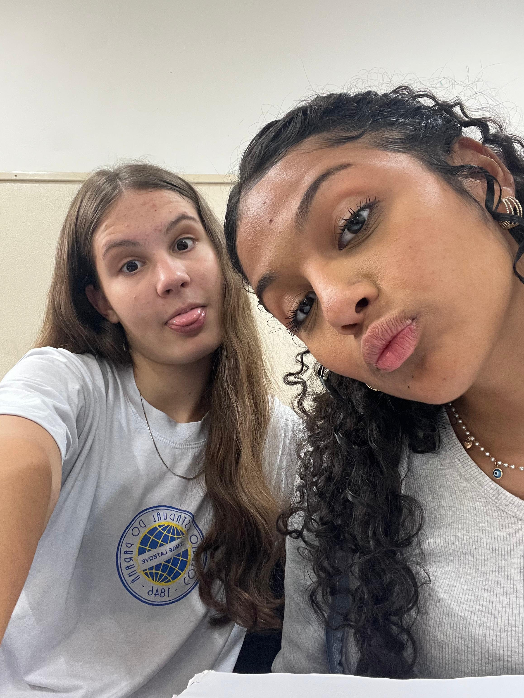

Érica e Arícia
Desenvolvedor Web & Mobile
Sobre nós
Olá! Meu nome é Henrique Fischer, sou apaixonado por tecnologia, adoro desafios e o que mais gosto da minha profissão, é transformar o mundo atráves das linhas de código. Sou desenvolvedor Frontend, com experiência em projetos Web e Mobile.
Olá! Meu nome é Henrique Fischer, sou apaixonado por tecnologia, adoro desafios e o que mais gosto da minha profissão, é transformar o mundo atráves das linhas de código. Sou desenvolvedor Frontend, com experiência em projetos Web e Mobile.
Experiências
Analista de Sistemas na Cavok Aviação
Jul, 2020 - Maio, 2022
Atuei na frente de diferentes projetos da empresa, entre eles o sistema ERP da Cavok, o sistema Cavok para Escola de Aviação, site institucional da empresa e o projeto Eletronic Flight Bag. Além de integrações com diferentes sistemas como SAP e Protheus (TOTVS)
Técnico de Informática Júnior na HF Tecnologia
Jun, 2019 - Jul, 2020
Trabalhei na área de gestão e suporte em TI, com rotinas de backup em nuvem, gestão de segurança com antivírus gerenciado Sophos, suporte ao Windows, pacote office, configurações de e-mails, manutenção de servidores e desktops, configuração de firewall e rede corporativa.
Auxiliar de Expedição na Joias Vip
Jun, 2017 - Jan, 2019
Trabalhei na área da expedição da empresa, embalando pedidos, na gestão do estoque, emissão de certificados de joias e notas fiscais de produtos.
Formação
MBA em Engenharia de Software na Universidade Tecnológica do Paraná (UTFPR)
2023 - Cursando
Nesta especialização estou aprimorando minhas técnicas de liderança e engenharia de software, como planejamento de projeto, metodológias agéis, análise de riscos e entre outros temas.
Pós Graduação em Perícia Forense Computacional na Universidade Cruzeiro do Sul
2022
Neste curso de extensão tive oportunidade de aprender sobre os procedimentos a serem realizados em casos de crimes computacionais, como investigar e coletar provas.
Bacharelado em Sistemas de Informação no Centro Universitário UNIBRASIL
2017 - 2021
Trabalho de Conclusão de Curso (iPet): Aplicação com frontend em React Native (mobile) / React.js (Web) e o backend em C#. Todo o projeto foi com base no consumo de APIs, integrando não apenas o backend, mas com APIs de pagamento (Pagarme) e geolocalização (Google)
Técnico em Logística no SENAI
2015 - 2016
Trabalho de Conclusão de Curso: Administração de Pedidos na Indústria 4.0, estudo sobre como as tecnologias impactam os processos industriais.
Curso de Inglês na On The Road
2021 - 2022 (cursando)
We know how much English is very important in carrer of IT. Never stop learning.